Classical Worlds 4

Barrel racing
United States +1 · Dexterity and skill games
Kottabos Symposium Toss
Greece · Archery, throwing and target games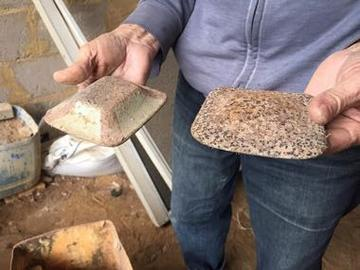
Malha
Portugal · Archery, throwing and target games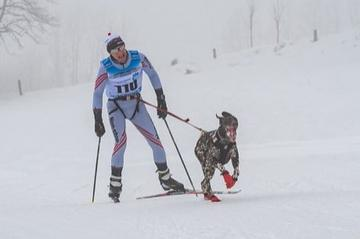
Skijoring
Worldwide · Sports with animal partners
Age of Contact and Craft 6
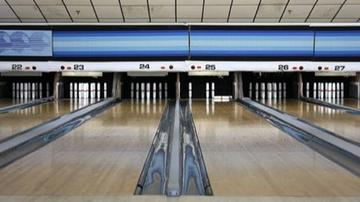
Candlepin bowling
United Kingdom +1 · Dexterity and skill games
Finnish pin toss
Finland · Dexterity and skill games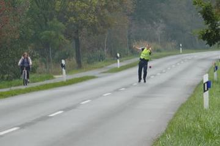
Frisian Road Bowling
Ireland +2 · Dexterity and skill games
Kicksled Race
Finland +2 · Racing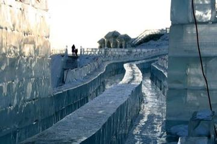
Luge and toboggan run
Worldwide · Racing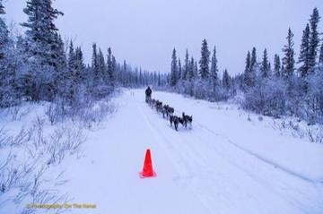
Sled dog race
United States +1 · Racing
Modern Heritage 26

Axe throwing
Canada +1 · Dexterity and skill games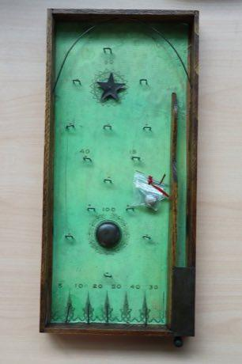
Bagatelle
France +1 · Dexterity and skill games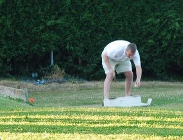
Bat and Trap
United Kingdom · Dexterity and skill games
Bhavai pot-balance dance
India · Dexterity and skill games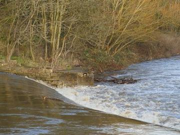
Bridge Stick Race
United Kingdom · Toys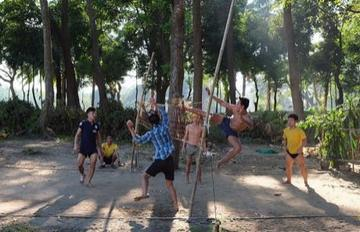
Chinlone
Myanmar · Dexterity and skill games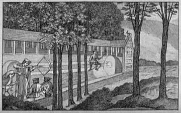
Crossbow Target Match
Italy +1 · Dexterity and skill games
Cymbergaj
Poland · Dexterity and skill games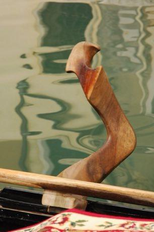
Gondola Rowing
Italy · Dexterity and skill games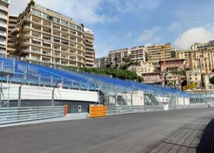
Harbour Street Circuit Time Trial
Monaco · Racing
Hose-Run Fire Sport
Czechia +1 · Dexterity and skill games
Ice Stock Sport
Austria +1 · Dexterity and skill games
Indian club swinging
India +1 · Dexterity and skill games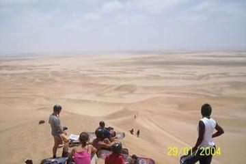
Namib dune sandboarding
Namibia · Dexterity and skill games
Nguni stick-fighting rhythm skirmish
South Africa +1 · Dexterity and skill games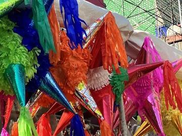
Pinata swing
Mexico +1 · Dexterity and skill games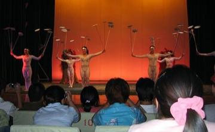
Plate Spinning
China · Dexterity and skill games
Ring Tilting
Croatia · Dexterity and skill games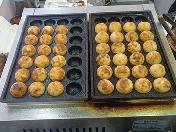
Takoyaki-style ball flipping
Japan · Dexterity and skill games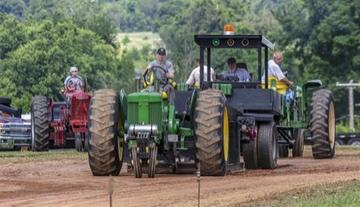
Tractor pull
United States +1 · Puzzles and mind games
Varpa
Sweden · Dexterity and skill games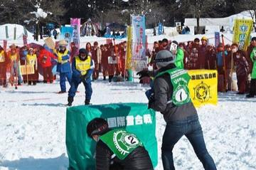
Yukigassen Snow Fort
Japan · Water and winter sports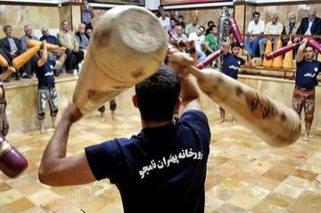
Zurkhaneh strength rhythm
Iran · Dexterity and skill gamesCurling
United Kingdom · Street and playground gamesKati
Kenya +1 · Street and playground gamesKoi
Botswana · Street and playground games
Living Traditions 9

Bamboo scaffold builder
China · Crafts and making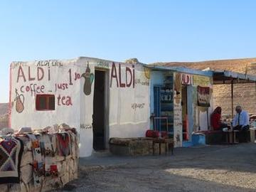
Bedouin Coffee Pour
Jordan · Crafts and making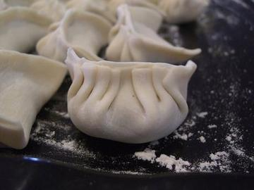
Dumpling Pleating
China +2 · Crafts and making
Freetown Beach Seine Haul
Sierra Leone · Performance and storytelling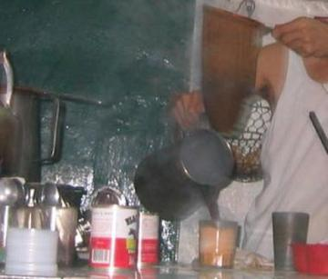
Hong Kong Milk Tea Pulling
China · Crafts and making
Ikpu Ite Coil Pot
Nigeria · Crafts and making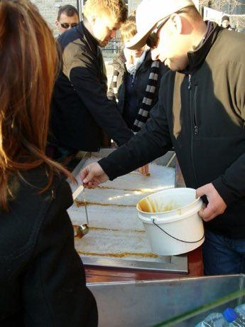
Maple taffy on snow
Canada · Crafts and makingNeon sign bender
China · Crafts and making
Wire car
Worldwide · Crafts and making